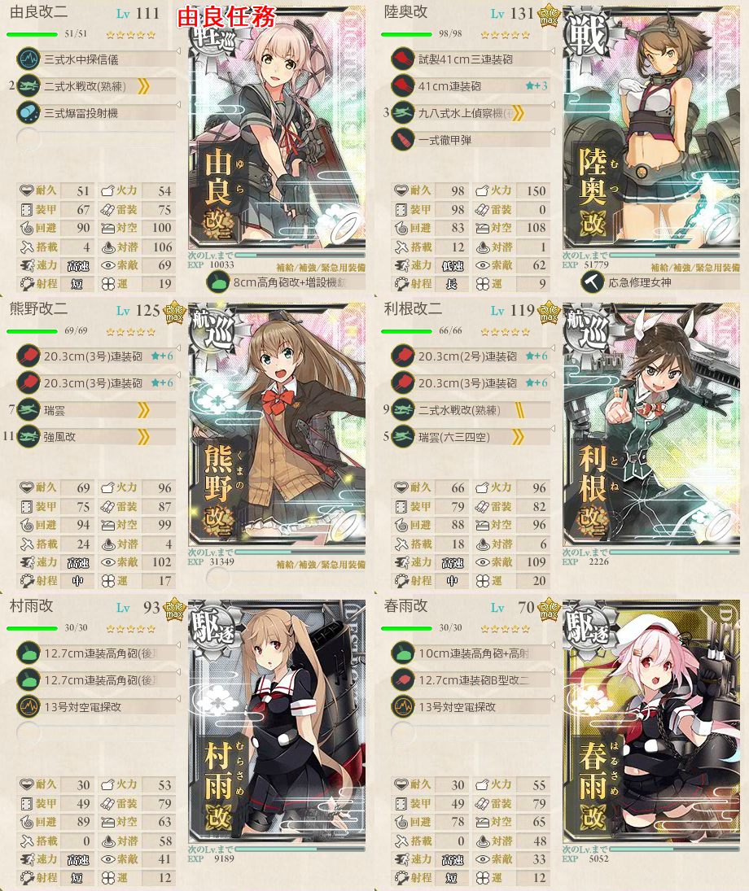
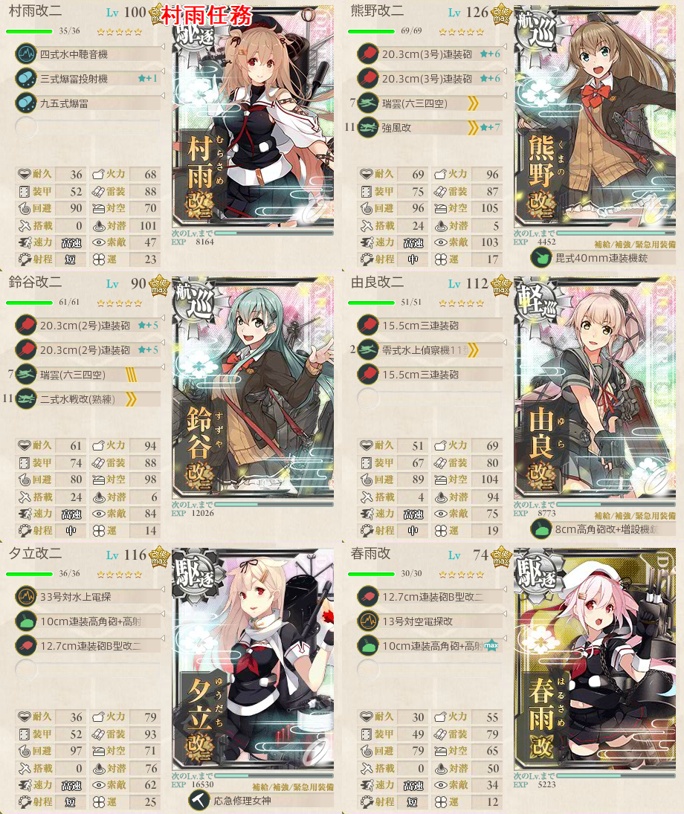

【艦これ】5-1 南方海域前面
5-1 南方海域前面 攻略メモ
編成
ボス前からボスに向かうには、重巡系が２隻以上がほぼ必須
- いない場合、8割でボスから反れる
重巡系が２隻以上いると開幕Aマス固定
AマスからはCorFにランダム
Cマスからボス前へは駆逐２隻以上で固定
- それ以外の場合は6～7割Eへ反れる
従って、重巡系２＋駆逐２がほぼ固定枠となる
残りは２巡要員の戦艦や、制空権を任せたいなら空母もありか？
「水上打撃部隊」南方へ！
マンスリー任務
ボスに対してS勝利する必要があり、ボスには潜水艦が交じるため先制対潜を１隻用意したい
- 幸い、軽巡が１隻要求されているのでそこに載せると良い
低速戦艦に海外艦（Warspite、Гангут）を使用すると条件を満たせない
自由枠が２つしかないため、重巡系２を入れて水戦を載せるなどして制空権を補助したい
ボス戦は複縦陣で
海上突入部隊、進発せよ！！
- 設定ミスを疑う難易度の単発任務
- 編成が比叡、霧島、長良、暁、雷、電の完全固定
- 駆逐軽巡が４隻であるため、道中の大破率も勿論高いが、ボス前からルート固定ができないのが最大の問題
- ただでさえ大破率が高いのに、ボス前からボスマスへ行くのに羅針盤の２割を引き当てる必要がある
- しかも、ボスではS勝利が要求される
旗艦「由良」、抜錨！

由良改二任務
ボスS勝利が要求されるが、自由枠が３あり、固定枠で駆逐２が含まれるのでルート固定が非常に楽
- 他の任務にも見習ってほしいものである
ルート固定を考えると由良１、駆逐（村雨、夕立、春雨、五月雨、秋月から）２、重巡系２、自由枠１
由良を先制対潜艦にし、駆逐は自由に選んでも良いが火力と対空を考えると夕立＋秋月が鉄板か
残りの自由枠は２巡要員の戦艦か、制空権のための空母
- 制空権は水戦に任せ、戦艦で２巡させるか空母で制空権を賄うかは好み次第
スクショの構成で制空権104～132程度あり、優勢を取るには十分
個人的所感としては、水戦を載せて制空権を補助しながら先制対潜攻撃が可能な由良改二ならではの運用ができる良任務
精鋭「四水戦」、南方海域に展開せよ！

- 村雨改二任務
- 旗艦が村雨固定になり、自由枠がなくなった由良改二任務
- ルート固定を考えると重巡系2隻は必須のため、実質自由枠なし